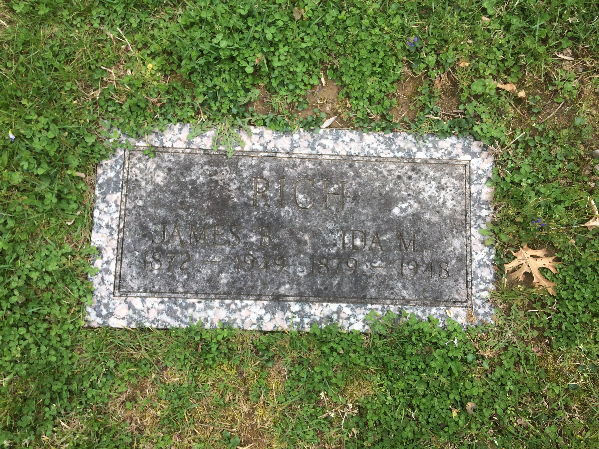

26 April 1872, Loveland, Ohio DOCUMENTED (Ohio death certificate, State File No. 36689, read from the certificate image on his Find a Grave memorial. Geni places Loveland in Hamilton County and the memorial places it in Clermont County; Loveland spans the county line, so this page names the town only)
Died
6 June 1949, at 2:30 p.m., Jewish Hospital, Cincinnati, Ohio DOCUMENTED (Ohio death certificate, State File No. 36689: coronary infarction, from cardio-vascular renal disease; age 77; widowed; residence River Road, Silver Grove, Kentucky; informant John W. Rich; attended 2–6 June 1949)
Buried
Highland Cemetery, Fort Mitchell, Kentucky — Section 19, Lot 123, Grave 4 — 9 June 1949 DOCUMENTED (Ohio death certificate, State File No. 36689; his wife Ida lies in Grave 3 of the same section and lot)
Married
Ida Mae Clark — no marriage record found UNPROVED (FamilySearch carries a contributor-entered marriage of 1897 at Hamilton, Ohio, not adopted; a tree-crew note gives 3 February 1897, Hamilton County, but the day is unverified and the October 2026 sweep found no marriage record in the Hamilton County extracts, so this page carries no marriage date)
Occupation
Magistrate DOCUMENTED (Ohio death certificate, State File No. 36689: usual occupation. A story summary mentions a machinist's trade, but no record behind it was filed)
Religion
Not recorded
Military
No military service recorded (a First World War draft memory for James was refuted in the tree-crew log)
James's place as their son, and as Helen's father, was settled by the October 2026 tree correction: Ancestry had attached Thomas Benjamin Rich and Barbara Goodpaster as Helen's parents, but they are her grandparents, and the wrong attachment was removed and verified empty. Geni shows the father as Thomas B. Rick, with a placeholder birth range of between circa 1831 and circa 1838, so no year is shown here; FamilySearch gives Thomas Berry Rich, and whether Berry is the father or the brother is unresolved. Geni estimates the mother at circa 1845, Ohio, a tree estimate with no record, so no year is shown for her either. The mother's name also appears as Barbary in a family note; Geni and the research folder give Barbara. The Rick/Rich surname form is flagged, not resolved. Their own profile is built at their turn.
No marriage record has been found for James and Ida, and no marriage date is carried here. James's Geni grid shows Ida as his only spouse.
Children
Helen E. RichSUPPORTED May V Rich Davies (1898–1936) SUPPORTED Thomas B Rich (1906–1917) SUPPORTED John W. "Jack" Rich (1923–1952) SUPPORTED
Helen is the only child established in the research folder; she married John Thomas Williams, and her birth year is open — see her page. Geni lists six children (May V. Davies, Helen, James M., Thomas B., Jack, Lelila); May, Thomas, and Jack are now carried on this card from the Find a Grave memorial — see the research notes — while James M. and Lelila are not adopted here. An Ancestry tree entry for Jack Carman Rich, born 14 August 1939 at Salt Lake City, names James and Ida as parents — unverified, not adopted. A September tree-crew note lists four further children (May V. 1899–1936, married Davies; James M. around 1904; Thomas B. 1906–1917; John W. Jack around 1924–1952); May, Thomas, and Jack are now carried on this card from the Find a Grave memorial, and James M. remains not adopted. The Ancestry Jack (born 1939) and the tree-crew Jack (around 1924) have different birth years and are not merged here. Lelila Rich, whom Geni lists among the children, is flagged in the research notes as a stranger's error and is not carried. Helen's own page lists these five as her siblings from Geni; this page follows the couple research folder, which establishes Helen only as James and Ida's child.
Siblings
George V. Rich (1867–1892) SUPPORTED Thomas Berry Rich Jr (1874–1961) SUPPORTED
Both are named as his siblings on his Find a Grave memorial; neither is linked on this page.
26 April 1872 · age 0 Born, Loveland, Ohio DOCUMENTED (Ohio death certificate, State File No. 36689)
1897–1907 (open) Daughter Helen born — her birth year is open (1897, 1907, and November 1898 all appear in the research; see her page)
6 June 1949 · age 77 Died at 2:30 p.m., Jewish Hospital, Cincinnati, Ohio, of coronary infarction DOCUMENTED (Ohio death certificate, State File No. 36689)
9 June 1949 Buried, Highland Cemetery, Fort Mitchell, Kentucky — Section 19, Lot 123, Grave 4 DOCUMENTED (Ohio death certificate, State File No. 36689)
Life Story
James Bernard Rich was born on 26 April 1872 at Loveland, Ohio, the son of Thomas Benjamin Rich and Barbara Goodpaster. His birth and death dates are documented by his Ohio death certificate, State File No. 36689, read from the certificate image on his Find a Grave memorial. His place as Helen's father was settled by an October 2026 tree correction: Ancestry had attached his parents as Helen's parents, but they are her grandparents, and the wrong attachment was removed and verified empty, leaving James and Ida as Helen's parents on all six tree sites. He married Ida Mae Clark, but no marriage record has been found, so no marriage date is carried here.
James and Ida had one established child, Helen, who married John Thomas Williams. He was a magistrate, and lived at Silver Grove, Kentucky, on River Road. James died on 6 June 1949 at 2:30 p.m. at Jewish Hospital, Cincinnati, aged 77, of coronary infarction, and was buried 9 June 1949 at Highland Cemetery, Fort Mitchell, Kentucky, Section 19, Lot 123, Grave 4, beside Ida in Grave 3; his son John W. Rich was the informant on his death certificate. A portrait of James from about 1884, when he was about twelve, is shown here; it comes from his Find a Grave memorial (photograph by James Windsor), pulled in full from the memorial on 5 November 2026. The four pictures in the couple folder are contextual views of Loveland and Aurora places, not family photographs, so none is shown here.
Photo Gallery
James Bernard Rich, photograph circa 1884, Cincinnati — son of Thomas B. Rich and Barbara (Goodpaster)

His grave marker at Highland Cemetery, Fort Mitchell — Section 19, Lot 123, Grave 4, beside Ida in Grave 3. The inscription is faint.
Sources and Evidence
Couple research folder (October 2026): James, son of Thomas Benjamin Rich and Barbara Goodpaster; no birth or marriage record found; his death record is now read (see below); parentage and place as Helen's father rest on the 19 October 2026 tree correction, in which the wrong Ancestry attachment was removed and verified empty SUPPORTED
Ohio death certificate, State File No. 36689, Registrar's No. 3419 (read from the certificate image on his Find a Grave memorial, pulled in full on 5 November 2026): James Bernard Rich, died 6 June 1949, 2:30 p.m., Jewish Hospital, Cincinnati, Hamilton County, Ohio; born 26 April 1872, Loveland, Ohio; age 77; widowed; usual occupation Magistrate; residence River Road, Silver Grove, Campbell County, Kentucky; father Thomas Rich; mother Barbara Goodpaster; informant John W. Rich; cause coronary infarction, from cardio-vascular renal disease; attended 2–6 June 1949; burial 9 June 1949, Highland Cemetery, Kenton County, Kentucky DOCUMENTED
Find a Grave memorial 178314621, James Bernard Rich: born 26 April 1872, Loveland, Clermont County, Ohio; died 6 June 1949, Cincinnati, Hamilton County, Ohio; buried Highland Cemetery, Fort Mitchell, Kenton County, Kentucky, Section 19, Lot 123, Grave 4; spouse Ida May Clark Rich (1879–1948) SUPPORTED
Geni profiles, click-verified 4 November 2026: James Bernard Rich (1872–1949), son of Thomas B. Rick and Barbara Rich, husband of Ida Mae Rich; his children grid lists May V Davies, Helen E. Rich, James M Rich, Thomas B Rich, Jack Rich, and Lelila Rich, of whom the research folder adopts Helen only SUPPORTED
Tree-crew log, Brief 45 (30 September 2026): death place Cincinnati; a machinist's trade (no record filed); a First World War draft memory refuted; a marriage of 3 February 1897, Hamilton County (not adopted — the October sweep found no record); five children listed (not adopted by the research folder) SUPPORTED
Hamilton County marriage extract 1808–1884 and church-death extracts (October 2026 sweep): no Rich × Clark marriage found — a negative search, not a gap in the search SUPPORTED
MyHeritage wave 2 (27 September 2026): neither spouse is in the MyHeritage tree, so no MyHeritage tile is shown here — a verified absence, not an unsearched one
Research Notes and Open Questions
Grades on this page: DOCUMENTED means an original record was read (his death certificate); SUPPORTED means corroborated secondary evidence — contributor dates agreed by Geni and by a Find a Grave memorial, or a settled tree correction — but no primary record; UNPROVED means contributor-only or unadopted.
Siblings. His Find a Grave memorial names two siblings — George V. Rich (1867–1892) and Thomas Berry Rich Jr (1874–1961). Neither is linked on this page.
Death certificate. His Ohio death certificate, State File No. 36689, Registrar's No. 3419, was read in full from the original image on his Find a Grave memorial on 5 November 2026 and is cited above: Magistrate; died 6 June 1949, 2:30 p.m., Jewish Hospital, Cincinnati; born 26 April 1872, Loveland; residence River Road, Silver Grove, Kentucky; father Thomas Rich (no middle name given — it does not settle whether his middle name was Benjamin or Berry); mother Barbara Goodpaster; informant John W. Rich; cause coronary infarction, from cardio-vascular renal disease; burial 9 June 1949, Highland Cemetery. His birth, death, and burial dates are now DOCUMENTED.
Children. Ida's Find a Grave memorial names three further children besides Helen — May V Rich Davies (1898–1936), Thomas B Rich (1906–1917), and John W. "Jack" Rich (1923–1952). They are now listed on the Children card at memorial grade. Find a Grave gives May 1898 (the tree-crew note gives 1899) and Jack 1923 (the tree-crew note gives around 1924); the card carries the Find a Grave years. A fresh read of both memorials on 5 November 2026 confirms the children list ends at John W. "Jack" Rich — he is the third and last child listed, on both memorials.
Dates: his birth and death dates are now DOCUMENTED from his Ohio death certificate, State File No. 36689, read in full on 5 November 2026. Geni places Loveland in Hamilton County and the memorial places it in Clermont County; Loveland spans the county line, so this page names the town only.
Marriage: no marriage record has been found. FamilySearch carries a contributor-entered marriage of 1897 at Hamilton, Ohio, not adopted; the tree-crew note's 3 February 1897, Hamilton County, is not adopted either, because the October 2026 sweep found no marriage record in the Hamilton County extracts.
Children: the research folder establishes Helen only. Geni lists six children, an Ancestry tree entry names Jack Carman Rich (born 1939, Salt Lake City), and a September tree-crew note lists four further children — none of the others is adopted, for the reasons given in the Children card, and the two Jacks are not merged.
Parents: the card text uses the research folder's forms (Thomas Benjamin Rich, Barbara Goodpaster). Geni shows the father as Thomas B. Rick with a placeholder birth range, so no year is shown; FamilySearch gives Thomas Berry Rich, and whether Berry is the father or the brother is unresolved; Find a Grave gives him as "Thomas Berry (or Thomas Benjamin) Rich, 1830–1892," which also leaves the middle name open; the mother's name also appears as Barbary in a family note; the Rick/Rich surname form is flagged, not resolved. Their pre-existing Ancestry profiles carry dates identical to James's and Ida's contributor dates (1872–1949, 1879–1948), chronologically implausible for the parents' generation and likely a data-entry copy error; they are attached on name and spouse pairing, and their facts were not edited here.
Siblings: not extracted. Geni's grid mixes half-siblings, step-siblings, and full siblings, so no sibling list is copied here.
Occupation: Magistrate, from his Ohio death certificate, State File No. 36689. The story summary's machinist's trade has no filed record behind it, and a First World War draft memory for James was refuted in the tree-crew log, so this page carries no military service.
MyHeritage: neither spouse is in the MyHeritage tree (verified in the September 2026 wave), so no MyHeritage tile is shown.
Books: no book source names this couple. The records are Hamilton County extracts, censuses, tree entries, and the two Find a Grave memorials. Open checks, not new tasks: the source behind the Jack Carman Rich tree entry; Utah marriage and death indexes; Ohio and Indiana marriage indexes for 1900–1930; the 1930 and 1940 censuses for a James B. Rich household with Ida M.
Photographs: his portrait from about 1884 is placed above as the profile picture and in the gallery below, with his grave marker; both were first placed as crops from phone screenshots of his Find a Grave memorial, as Find a Grave blocked the browser's pull, and the originals were pulled in full from the memorial on 5 November 2026 and now serve the page. His death certificate is filed in the couple folder and cited above, not shown as a gallery figure. The couple folder holds four contextual place views (Loveland Castle, the Shields Crossing house, the Aurora Hillforest house, and the Rising Sun courthouse); none is a family photograph, so none is shown here.
Helen's page: her Parents card shows James Bernard Rich (1872–1949) with a DOCUMENTED badge, and this page now grades those dates DOCUMENTED as well, from his Ohio death certificate — the earlier badge tension is resolved.
The shared edit box carried on earlier generation pages is not shown here: no shared document for this generation has been confirmed. Corrections can go in the couple folder.
Profile history: Created 4 November 2026 from the family couple research folder and notes.